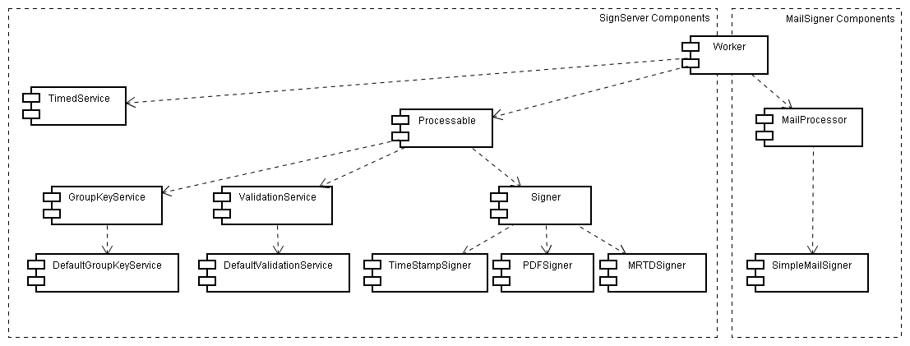

- Introduction
- Introduction/scope
- Major changes from previous versions
- Changes between version 3.6 and 3.7
- Changes between version 3.5 and 3.6
- Changes between version 3.4 and 3.5
- Changes between version 3.3 and 3.4
- Changes between version 3.2 and 3.3
- Changes between version 3.1 and 3.2
- Changes between version 3.0 and 3.1
- Changes between version 2 and 3
- Changes between version 1 and 2
- Terms Used in This Document
- Overall Architecture
Introduction
Introduction/scope
The SignServer is an application framework performing cryptographic operations for other applications. It's intended to be used in environments where keys are supposed to be protected in hardware but it isn't possible to connect such hardware to existing enterprise applications or where the operations are considered extra sensitive so the hardware have to protected more carefully. Another usage is to provide a simplified method to provide signatures in different application managed from one location in the company.
The SignServer have been designed for high-availability and can be clustered for maximum reliability.
The SignServer comes with a RFC 3161 compliant Time-Stamp signer serving requests through HTTP or client-authenticated HTTPS. A MRTD (Machine Readable Travel Document, i.e. electronic passport) signer. A PDF signer that adds a signature automatically to a uploaded PDF document, ODF signer that adds a signature automatically to uploaded ODF document, OOXML Signer that adds signature automatically to a uploaded OOXML document, and a validation service used to lookup the validation of a given certificate.

Drawing 1: Overview of a possible set up of a highly available SignServer solution
Major changes from previous versions
Changes between version 3.6 and 3.7
- Individual keys and certificates support
- PKCS#11 libraries used by crypto tokens must be defined at deploy-time
- Initial support for building using Maven
Changes between version 3.5 and 3.6
- Underlaying CESeCore library upgraded to version 6.1
- Separation between community and enterprise editions
- Separate worker and crypto tokens
- New application: SignServer TimeMonitor (enterprise edition)
- Querying of database archive from WS and GUI
- HSM keep alive service
Changes between version 3.4 and 3.5
- Support for JBoss AS 7.1, JBoss EAP 6.1 and GlassFish 3.1
- Support for MariaDB
- Support for JDK 7
- All worker configuration can now be done from the Admin GUI
- Document signer and validator for XAdES-BES and XAdES-T
- Support for different signature algorithms in XML signers
- Various AdminGUI/remote administration improvements
- Support for the group key framework has been discontinued
Changes between version 3.3 and 3.4
- Secure logging to database from CESeCore
- Query audit log from CLI, GUI or over web services
- See ChangeLog.txt and RELASE_NOTES.txt for details.
Changes between version 3.2 and 3.3
- New client web services API
- MS Authenticode time-stamp signer
- Support for archiving of time-stamp requests
- Logging of all changes to service components
- Stress test tool for measuring performance
- Dropped support for JBoss 4.2.x.
- Dropped support for cluster class loader
- Dropped support for WSRA
- Upgrade of cryptographic library
- Many more minor changes and bug fixes. See ChangeLog.txt and RELASE_NOTES.txt for details.
Changes between version 3.1 and 3.2
- A new administration web service (WS) for remote administration of SignServer.
- A new administration GUI desktop application for managing workers. Supports key generation and both local and remote administration.
- A new client command line interface (CLI) for requesting signing and validation.
- Support for GlassFish Server 2.1.1.
- Support for JBoss Application Server 5.1.
- Support for Oracle Database.
- Worker renewing signers by generating new keys and sending certificate requests to EJBCA.
- Better audit and transaction logging.
- New build scripts and project structure with the goal of decouple the different SignServer modules and sub-projects and simplify future development.
- Front page listing all demo web pages.
- The bundled SMTP server and MailSigner build of SignServer has been removed.
Changes between version 3.0 and 3.1
- A new Cluster Class Loader, simplifying the management of customized workers in a cluster. All the resource data including the classes themselves are stored in database and accessible from all nodes simultaneously. It is also possible to run multiple versions of the same worker in the same SignServer cluster, this is useful when migrating a worker to new code since both the old and new worker can be run at the same time.
- PDF Signer, Time-Stamp Authority and MRTD and their specific libraries have the possibility to build into separate module archives (MAR files) that have to be uploaded to the SignServer installation before usage, if the cluster classloader is enabled (default).
- Installation packages for Linux/Windows of both SignServer and MailSigner using generation software from Bitrock.
- New extended module for signing ePassports: MRTD-SOD.
- New modules for signing and validating XML documents.
- A new ODF Signer module that adds signature to ODF documents, such as : odt,ods,odt (tested with OpenOffice.org 3.1.0). Simple web page is added where ODF document can be uploaded for signing, and resulted signed document downloaded.
- A new OOXML Signer Module that adds signature to Office Open XML documents, such as docx,xlsx,pptx (tested with Microsoft Office 2007).Simple web page is added where open office xml document can be uploaded for signing, and resulted signed document downloaded.
- Validators for several document types as well.
- Java 5 is no longer supported.
- For minor changes see the change log at https://jira.primekey.se
Changes between version 2 and 3
- Complete refactorisation of J2EE from EJB2 to EJB3 to simplify further development.
- Renamed component "Service" to "TimedService" since 3.0 supports other services.
- A "TimedService" can now be configured with a 'cron-like' settings to have services executed in other than just periodical intervals.
- A Validation Service API used to validate certificate from different issuers. The Validation Service API have it's own easy to use Web Service used to integrate with other platforms. A Group Key Service API used to generate and manage group keys, symmetric or asymmetric.
- Possibility to have customized authorization of requests, not just the built in client certificate authorization list.
- The name SignToken is changed to CryptoToken and introduced a new concept of ExtendedCryptoToken that supports symmetric operations.
- The RMI-SSL interface have been removed and replaced with a JAX-WS interface with a simple client framework supporting different load-balance or high availability policies.
- All request data have changed from serialization to externalization to be easier to translate to other platforms.
- A completely new MailSigner API based upon the JAMES SMTP server to perform automated cryptographic operations on e-mails very similar to the plug-ins for the SignServer.
- Java 1.4 is no longer supported.
- A lot of new JUnit tests in the test suite.
- A PDF Signer that can add a signature to a PDF document through a simple HTML interface.
- PKCS11 Crypto Token to connect to different PKCS11 implementations.
Changes between version 1 and 2
- signserver_server.property file have been removed and replaced with a global configuration store.
- It is now possible to dynamically add and remove available signers
- A new type of component, "Service" that is run on a timely basis, used to perform maintenance or report generation.
- Improved cluster deployment functionality.
- New CLI tools to batch configure the SignServer, and to backup a current configuration.
- This makes it possible to set-up a configuration in test environment, dump the configuration and configure the same it in production.
Terms Used in This Document
| Term | Explanation |
|---|---|
| Signer | A Processable service performing signatures upon requests. This could be a ready made signer or a custom developed one. |
| Crypto Token (former Sign Token) | A Crypto Token is a name for the entity containing the private key and is responsible for its cryptographic operations. Each worker can contain a crypto token or reference a crypto token from an other worker. |
| Crypto Worker | Is a worker not performing any operations on its own and instead only hosts a Crypto Token that can be referenced by other workers. |
| Extended Crypto Token | An enhanced Crypto Token with support for symmetric key operations. |
| PKCS11CryptoToken | A Crypto Token able to communicate with Hardware Security Modules through the standard PKCS11 interface. |
| TimedService (former Service) | A TimedService is a task that is run on a timely basis, performing maintenance tasks like changing active key or generate a report. |
| Worker | A common name for Processable (Signer or other type of service) and TimedService |
| Processable | A type of worker that is used to process requests, i.e. not a TimedService. |
| Worker Configuration | Each Worker can be configured with properties specific for that worker. There are two sets of worker configuration one "Active" that is used by the signer and one "current" which is the one configured by the administrator. The current configuration isn't used in production until the administrator issued the reload command. This makes it possible for the administrator to configure multiple properties and double-check them before they are actually used. |
| Global Configuration Store | Is a dynamic store used to define available Workers and their Crypto Tokens. But other data that needs to be read globally could be set there as well. The global configuration properties are activated immediately. There are two different scopes for the store data, Global Scope and Node Scope. |
| Global Scope | Data stored in the global configuration that can be read by all nodes in the cluster. |
| Node Scope | Data that is node specific and can only be read within the same node. |
| Worker Id | Unique identifier of a worker, an integer larger than 0 |
| Worker Name | A name used as a human readable synonym for a Worker Id |
| Validation Service |
A Processable that checks if a certificate is valid or not. Have a Default Validation Service implementation that should work in most cases. A Validation Service should have one or more Validators configured. |
| Certificate Validator (former Validator) | A Certificate Validator is responsible for checking the status of one or more issuer's certificates. This could be as an OCSP client or a CRL checker or just looking up the status in a database. |
| Document Validator | A Document Validator is validating a signed document by checking its signature and corresponding certificate(s) and returns the validation result. |
| Authorizer | An interface that enables developers to integrate the authorization parts with existing authorization systems of who is authorized to perform requests to a Processable. |
| Time Stamp Signer | A Signer that can be used to set up a Timestamp Authority according to RFC 3161. |
| MRTD Signer | A Signer that performs signatures of MRTD (Machine Readable Travel Documents, i.e. Electronic Passports) blobs. |
| MRTD SOD Signer | A Signer that creates the complete security object (SOd) for a MRTD (Machine Readable Travel Document, i.e. Electronic Passports) by signing the data groups. |
| PDF Signer | A Signer that attaches an electronic signature signature to a PDF document. |
| XML Signer | A Signer that puts in an enveloped signature in XML documents (XMLDSig) |
| XML Validator | A Document Validator that validates signed XML documents (XMLDSig) |
| XAdES Signer | A Signer signing XML documents using XAdES |
| ODF Signer | A Signer that attaches an electronic signature to an ODF document. ODF Signer is tested with documents produced by OpenOffice.org v 3.1.0 |
| ODF (Open Document Format) Document | XML-based file format for representing electronic documents such as spreadsheets, charts, presentations and word processing documents. more... |
| OOXML (Office Open XML) Document | XML-based file format for representing spreadsheets, charts, presentations and word processing documents. more... |
| OOXML Signer | A Signer that attaches an electronic signature to an OOXML document. |
| Archiver | Implementation handling archiving of a worker's response and/or request by storing it in a database or similar. |
Overall Architecture
The SignServer is a framework designed to perform different kind of cryptographic operations for different applications.
Since the 3.0 version there are three kind of processable services. Signers (used to sign or in other way process requested data). Validation Services used to verify the validity of a certificate against a set of backed issuers. The validation service can be used to simply the integration of PKIs into existing applications. In addition to processable services there also exists another concept called Timed Service (called just 'service' in 2.0 edition) which are plug-ins run at defined intervals performing maintenance or reporting routines.
The main way of communicating with the SignServer is through HTTP (web server) interface. There is also a web services (SOAP WS) interface available but that uses a special binary format for encoding the requests and responses.
For an overview of the different concepts in the SignServer see illustration 1. The base component is called Worker which is assigned an id, optionally a name and a configuration. A sub component is a Processable which receives and processes requests. A Processable (optionally) have access to a cryptographic token (CryptoToken) in charge of managing the keys of a Processable. A CryptoToken can be either software or hardware based.
The applications i administrated through a command-line interface, where the properties and access control can be configured.
One SignServer can have multiple services for different purposes.

Illustration 1: Components in the SignServer project
{kind=link}